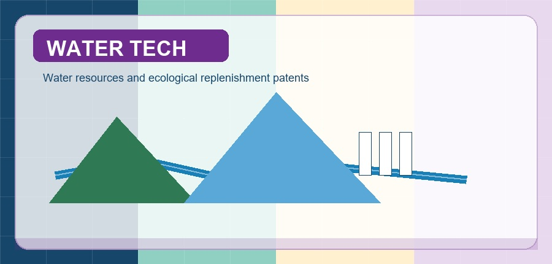

Patents
- Yang Shi, Jiahua Wei. An acoustic agglomeration observation system and operating method for aerosol particles, China Patent, 2023, 202311338681.8.
- Yang Shi, Jiahua Wei, Jiaqi Xu, Yue Wu. A rapid pre-assessment method, device and equipment for ecological water replenishment effect in North China watersheds, China Patent, 2023, ZL 202311386297.5.
- Yang Shi, Jiahua Wei, Jiaqi Xu, Yue Wu. A method, device, apparatus and medium for determining an ecological water recharge pattern in a watershed, China Patent, 2023, ZL 202311404752.X.
- Yang Shi, Jiahua Wei, Jiaqi Xu, Yue Wu. An integrated benefit assessment method for water resources allocation and disposition in North China watersheds, China Patent, 2023, ZL 202311395418.2.
- Yang Shi, Jiahua Wei, Zhifeng Zhao, Wenwen Bai. An experimental platform and method for visualising acoustic flocculation of suspended particles, China Patent, 2023, ZL 202311386896.7.
- Huaqin Zhang, Ran Zhou, Songgui Chen, Shitao Peng, Yang Shi, Jianing Luo, Hanbao Chen, Zhaoyang Zhang, Longzai Ge, Chen Peng. Oil deflector wings for avoiding spilled oil over the boom, China Patent, 2017, CN206607567U.
- Huaqin Zhang, Yang Shi, Shitao Peng, Zhaoyang Zhang, Hanbao Chen, Shaowu Li, Ran Zhou, Demei Zhen, Pengxu Zou, Hongbo Zhao. A wave鈥揷urrent tank for oil spill containment experiment of oil boom, China Patent, 2017, CN206034365U.
- Hanbao Chen, Zhaoyang Zhang, Huaqin Zhang, Ran Zhou, Songgui Chen, Shitao Peng, Yang Shi, Jianing Luo. An experimental method for changing the weight of a uniform skirt to form a proper buoyancy鈥搘eight ratio, China Patent, 2017, CN106769664A.
- Shitao Peng, Yang Shi, Jianing Luo, Hanbao Chen, Zhaoyang Zhang, Huaqin Zhang, Ran Zhou, Songgui Chen, Yanran Liu. An experimental method for optimizing ballast mass distribution of oil boom skirt, China Patent, 2017, CN106768839A.
- Ran Zhou, Zhaoyang Zhang, Xiaoli Wang, Jiaqi Zhang, Shitao Peng, Hanbao Chen, Yang Shi, Songgui Chen, Haiyuan Liu, Lequn Zhu. An experimental device for environmental adaptability analysis and detection of sheet-like oil absorbing materials, China Patent, 2016, CN205941508U.
- Ran Zhou, Zhaoyang Zhang, Xiaoli Wang, Jiaqi Zhang, Shitao Peng, Hanbao Chen, Yang Shi, Songgui Chen, Xu Zhao, Lequn Zhu. An environment-adaptive performance analysis and detection method for sheet-like oil absorbing material, China Patent, 2016, CN106198887A.